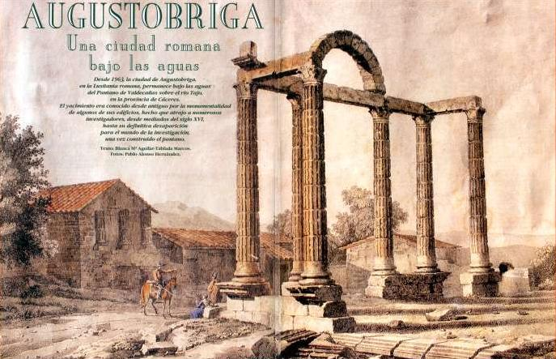
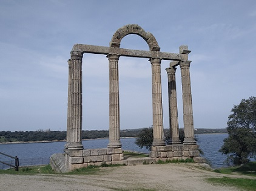

|
AUGUSTOBRIGA
EL ÚNICO PÓRTICO DE CURIA CONSERVADO EN TODO EL MUNDO ROMANO

El término de Talavera la Vieja estuvo poblado por el hombre desde tiempo antiguo como atestiguan sus dólmenes. Denominada Ebora en época de la Vettonia. Son testigos los números vestigios de esta época como toros y cabezas de verracos. Ebora fue romanizada y le cambiaron el nombre por el de, Augustobriga, como demuestra la inscripción del siglo I encontrada en Talaverilla que dice: "Cayo Julio Clavero de la tribu Galeria, hijo de Cayo, al Senado y pueblo de Augustobriga concede una merced como huésped".
Augustobriga obtiene la ciudadanía el año 74, con Vespaisano. Según Plinio era una ciudad sujeta a tributo y gozó del derecho latino desde el sigo I. En el siglo II se debió construir la columnata de los Mármoles, en el III se edificaron sus murallas. Se han catalogado más de 31 inscripciones, se han hallado numerosos restos y un mosaico que por la inundación no se pudo recuperar, quedando bajo las aguas en las termas.
Los restos romanos más importantes eran: Mármoles: columnata construida en el siglo II, trasladada en 1963 a su nuevo emplazamiento por la inundación del pantano de Valdecañas. El templo de la Cilla, del que se conservaban tres columnas incompletas de orden corintio. También estas tres columnas fueron trasladadas a un nuevo emplazamiento. Las murallas en las afueras del pueblo se encontraban grandes vestigios de una muralla. El acueducto, que tenía un metro de altura y poco más medio de anchura. Junto a la bajada del río se veía un tramo del acueducto y en el casco de la población se encontraron algunos canales subterráneos que distribuían el agua desde un depósito en el que desembocaba el acueducto y al que conocían los vecinos con el nombre de Cantamora. Las termas romanas, se encontraron en las excavaciones realizadas poco antes de la inundación con tuberías de plomo de forma ovalada, también aparecieron en la excavación mosaicos, cerámica, restos de hornos de fundición y numerosas monedas del imperio. La calzada romana, se pueden encontrar restos en las inmediaciones del Castillo de Alija. Foto: Sergio Aguiar

Desde 1963, la ciudad romana de Augustobriga, en la Lusitania romana, permanece bajo las aguas del Pantano de Valdecañas sobre el río Tajo en la provincia de Cáceres.
Las dimensiones de la curia de Talaverilla coinciden con la descripción que da Vitruvio. Se conserva íntegro su basamento de piedra granítica de 20,43m de largo por 11,55m de ancho, así como su pavimento de grandes losas. También su pórtico de cuatro columnas de frente y dos a los costados, correspondientes a las fachadas laterales, que todavía soportan a los dinteles y un arco en el centro. Faltan los muros de la sala. Comentan los más viejos del lugar que según sus antepasados, las estrías de las columnas estuvieron cubiertas o chapadas de vidrio que deslumbraba desde muy lejos, por lo que los nativos lo llamaban "Los Mármoles". Imprescindible en todos los tratados de Arqueología. El 10 de mayo de 1963 los peritos de Hidroeléctrica Española, fotografiaron los edificios romanos más destacables. Pórtico de Curia de Talavera la Vieja, en su nueva ubicación.
Ver Templos romanos
|
| CIUDADES HISPANIA | EXTREMADURA ROMANA | TOPÓNIMOS |
|
|